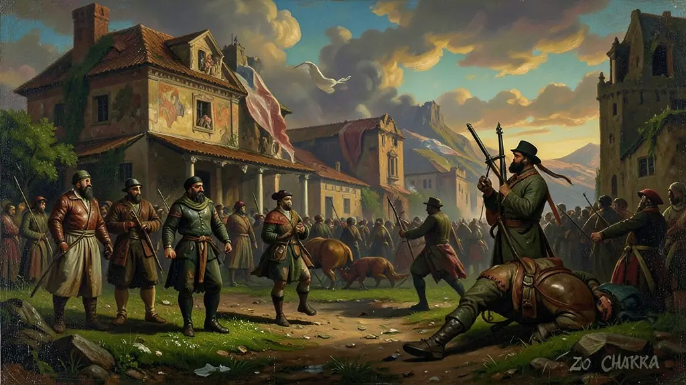
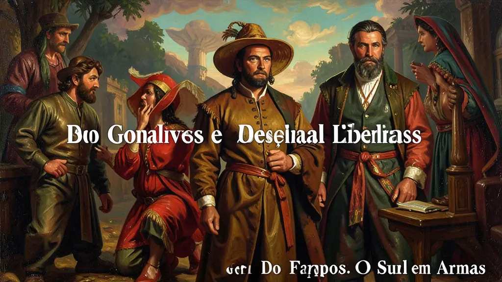
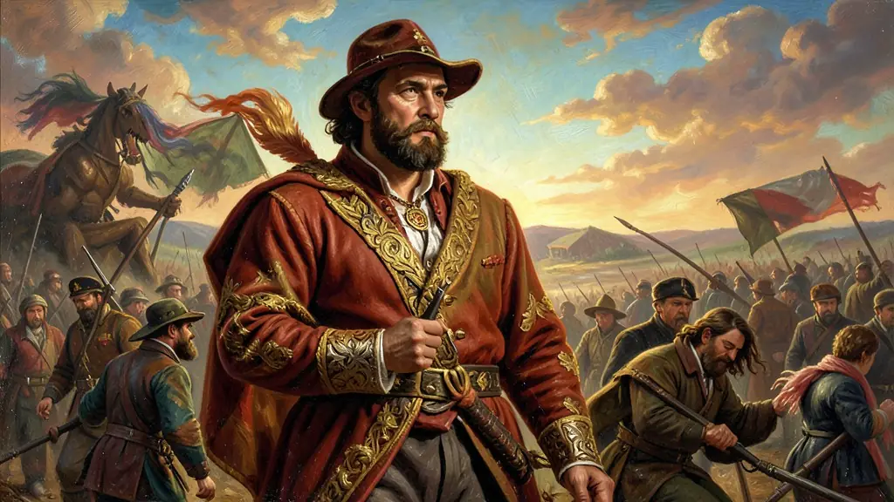

"A Revolução Farroupilha foi a maior e mais longa revolta do período regencial. Os gaúchos lutaram dez anos contra o Império para defender sua economia e seus ideais republicanos."
A Revolução Farroupilha (ou Guerra dos Farrapos) estourou no Rio Grande do Sul e se expandiu para Santa Catarina. O motivo principal era econômico: a elite dos estancieiros (criadores de gado) estava indignada com os altos impostos sobre o Charque (carne seca) gaúcho, que era mais caro que o charque importado do Uruguai e da Argentina. Além disso, os gaúchos queriam maior autonomia para a província e se opunham ao centralismo autoritário do governo regencial no Rio de Janeiro.
Em 1836, os revoltosos proclamaram a República Rio-Grandense (ou República de Piratini) sob a liderança de Bento Gonçalves. O conflito contou com a participação do italiano Giuseppe Garibaldi e de sua esposa catarinense Anita Garibaldi, que ajudaram a fundar a República Juliana em Santa Catarina. Foi uma guerra de guerrilha, onde a cavalaria farroupilha levava vantagem nos campos dos pampas, mas falhava em tomar cidades fortificadas e portos dominados pela marinha imperial. A guerra terminou em 1845, já com D. Pedro II no trono, através do Tratado de Paz de Poncho Verde negociado pelo Barão de Caxias. O Império anistiou os rebeldes, incorporou os generais farroupilhas ao exército brasileiro e baixou os impostos sobre o charque nacional. O ENEM costuma cobrar as motivações econômicas, a questão do federalismo e o papel dos 'Lanceiros Negros' — escravizados que lutaram na guerra com a promessa de liberdade, mas foram traídos no fim do conflito.
Capítulo 01
1. O Tributo ao Charque: O Pavio da Guerra
O Rio Grande do Sul sustentava o Brasil escravocrata com sua carne seca (charque). Mas o governo imperial, em vez de proteger o produto nacional, cobrava impostos caríssimos, tornando o charque estrangeiro mais barato nos portos do Rio de Janeiro e Salvador. Os gaúchos sentiram-se traídos pela pátria e decidiram que era melhor ser uma República independente do que uma província explorada.
A revolta começou por conta do imposto sobre a sobrevivência econômica do Sul.

1. O Tributo ao Charque: O Pavio da Guerra
Capítulo 02
2. Bento Gonçalves e os Ideais Liberais
Bento Gonçalves era o líder carismático da elite gaúcha. Preso pelo Império, ele fugiu de modo espetacular do Forte do Mar em Salvador e voltou para comandar os exércitos rebeldes. Sua visão era de uma República Federativa, onde o poder estivesse nas mãos de quem produzisse a riqueza, e não em juízes nomeados no Rio de Janeiro. Ele simboliza o orgulho e a coragem da elite militar sulista.
Bento Gonçalves foi o presidente herói da primeira grande república democrática do Sul.

2. Bento Gonçalves e os Ideais Liberais
Capítulo 03
3. Garibaldi e Anita: O Amor e a Revolução
Giuseppe Garibaldi, fugindo da repressão na Itália, chegou ao Brasil para lutar pela liberdade. Em Santa Catarina, ele conheceu Anita, que abandonou tudo para lutar ao seu lado a cavalo, disparando canhões nas lagoas catarinenses. Juntos, eles expandiram a guerra para o norte e fundaram a República Juliana. Esse casal tornou-se o maior mito romântico de luta pela liberdade mundial.
A Farroupilha foi a escola militar de Garibaldi para libertar a Itália futuramente.

3. Garibaldi e Anita: O Amor e a Revolução
Capítulo 04
4. O Massacre de Porongos e a Traição dos Negros
O capítulo mais triste da guerra. O governo imperial não aceitava dar liberdade aos ex-escravizados que lutaram como 'Lanceiros Negros' pelos farrapos. Para facilitar a paz entre generais (todos brancos), os farroupilhas foram acusados de permitir que os negros fossem massacrados de surpresa em Porongos pelos imperiais. A promessa de liberdade terminou de forma covarde em nome da unificação das elites.
A paz dos brancos foi selada com o sangue traído dos lanceiros negros.
Capítulo 05
5. A Paz de Poncho Verde: A Conciliação de Caxias
O Barão de Caxias entendeu que uma guerra de extermínio no sul deixaria o Brasil vulnerável a ataques de vizinhos como o Uruguai. Ele ofereceu uma paz honrosa: o charque estrangeiro seria taxado em 25%, os escravos sobreviventes seriam mantidos livres (teoricamente) e os generais rebeldes manteriam seus postos. O Rio Grande voltou a ser brasileiro com o orgulho ferido, mas com a economia salva.
Caxias transformou farrapos em brasileiros novamente sem perdedores humilhados.
Texto de apoio
A Guerra dos Farrapos (1835-1845) destaca-se na historiografia das rebeliões do século XIX não apenas por sua extrema longevidade, mas por sua constituição eminentemente elitista em contraponto às insurreições populares coevas. Conforme demonstra Spencer Vampré, a revolta rio-grandense teve suas bases fundamentadas na elite estancieira insatisfeita com a escorchante tributação central sobre o charque nacional, que perdia competitividade frente à isenção concedida ao produto estuarino e uruguaio.
Durante os dez anos do conflito gaúcho, instalou-se a República Rio-Grandense (e, transitoriamente, a República Juliana). Nela manifesta-se a complexidade da geopolítica platinense e o intervencionismo estancieiro, onde charqueadores mantinham fortíssimos elos mercantis com nações vizinhas. A participação dos Lanceiros Negros, escravizados a quem foi prometida alforria pela prestação militar, revelou a face conservadora dos líderes farrapos. Na Batalha de Porongos, o massacre dessa corporação atesta o cinismo aristocrático que jamais considerou incorporar os negros à cidadania republicana idealizada.
A abordagem do Exame Nacional do Ensino Médio sobre a Farroupilha comumente foca no término do conflito: o Tratado de Poncho Verde. Em flagrante contraste com a repressão executada (e dizimadora) na Cabanagem e na Revolta dos Malês, as lideranças sulistas não apenas foram perdoadas imperialmente; tiveram suas patentes reconhecidas e lucraram com a nova tarifa econômica alfandegária, escancarando que a centralização imperial brasileira punia com forca os miseráveis e premiava oligarquias que negociavam através das armas.
Fonte: PESAVENTO, Sandra Jatahy. A Revolução Farroupilha. São Paulo: Brasiliense, 1990.
⚡
Arcade
Atividades interativas
?
Simulado
Questões para fixar
—
—
Módulo concluído
Questão A · Enem 2012 Oficial
A principal reivindicação econômica da elite gaúcha que levou ao início da Revolução Farroupilha em 1835 foi:
Resposta correta: B
A proteção do mercado interno de charque era a base da riqueza dos estancieiros revoltosos.
Questão B · Simulado ENEM / História do Brasil
O massacre de Porongos (1844) é um episódio marcante da Revolução Farroupilha que revela:
Resposta correta: B
Porongos foi a solução violenta e covarde para 'limpar' a questão da liberdade negra na negociação de paz entre as elites.
Questão C · ENEM
Qual foi o principal motivo econômico que levou à eclosão da Revolução Farroupilha?
Resposta correta: B
Questão D · ENEM
Qual foi o resultado do Tratado de Paz de Poncho Verde, que encerrou a Revolução Farroupilha?
Resposta correta: B
Questão E · ENEM
Qual foi o papel dos Lanceiros Negros na Revolução Farroupilha?
Toque para revelar a resposta. Repita até sair sem hesitar.
A principal reivindicação econômica da elite gaúcha que levou ao início da Revolução Farroupilha em 1835 foi:
A proteção do mercado interno de charque era a base da riqueza dos estancieiros revoltosos.
O massacre de Porongos (1844) é um episódio marcante da Revolução Farroupilha que revela:
Porongos foi a solução violenta e covarde para 'limpar' a questão da liberdade negra na negociação de paz entre as elites.
Mitos e verdades
O senso comum está cheio de desinformação histórica. Separe os fatos.
"Verdade ou Mito: Sobre o tema, é correto afirmar que: A) A proibição de criar gado no território do Rio Grande do Sul.."
Verdade
A proteção do mercado interno de charque era a base da riqueza dos estancieiros revoltosos.
"Verdade ou Mito: Sobre o tema, é historiograficamente aceito que: B) A redução dos impostos de importação sobre o sal e o aumento das tarifas sobre o charque estrangeiro para proteger a produção local.."
Mito
Falso! A proteção do mercado interno de charque era a base da riqueza dos estancieiros revoltosos.
"Verdade ou Mito: Sobre o tema, é correto afirmar que: A) A amizade profunda entre negros e brancos em todas as camadas da sociedade farroupilha.."
Verdade
Porongos foi a solução violenta e covarde para 'limpar' a questão da liberdade negra na negociação de paz entre as elites.
"Verdade ou Mito: Sobre o tema, é historiograficamente aceito que: B) A traição cometida contra os Lanceiros Negros, que foram desarmados e entregues ao massacre das tropas imperiais para facilitar o acordo de paz.."
Mito
Falso! Porongos foi a solução violenta e covarde para 'limpar' a questão da liberdade negra na negociação de paz entre as elites.
Linha do tempo
Clique nos eventos na ordem cronológica correta.
2. Bento Gonçalves e os Ideais Liberais
3. Garibaldi e Anita: O Amor e a Revolução
1. O Tributo ao Charque: O Pavio da Guerra
?
?
?
Cronologia perfeita!
Associações
Encontre os pares conceito ↔ definição.
Heroína gaúcha da revolução farroupilha
Poncho
Garibaldi
Anita Garibaldi
Italiano que lutou pela causa farroupilha no Brasil
República Piratini
Estado republicano criado pelos farrapos no sul
Símbolo cultural gaúcho que aparece nas batalhas dos farrapos
Revolução gaúcha de 1835 a 1845
Bento Gonçalves
Guerra dos Farrapos
Líder farroupilha e presidente da República Rio-Grandense
Termo oculto
Dica: O conceito-chave central ou termo associado à aula de Guerra dos Farrapos: O Sul em Armas.